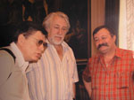

«Юрий Кублановский: «Поэзия – это река Ностальгия»
Мир тесен. И тем горше от того, что отчуждение людей и целых народов, отчуждение рас и культур продолжается на бывшем общем пространстве славянского материка. Когда происходят исполинские географические изменения и такие геостратегические катастрофы, как распад империи СССР, было бы наивно думать что никто не жалеет о бывшей великой стране. О бывшей общей Отчизне. Но вот какое дело. С ностальгией вспоминают о бывшем Союзе именно те люди, кто с младых ногтей боролся против идеологической империи СССР, воспевал имена империи царской, а когда на карте мира появилась Россия, когда еще во времена Президента СССР Михаила Горбачева избрали Президента России Бориса Ельцина и начался «парад суверенитетов», как остроумно заметил генсек-президент, - мало кто лег под танки «за Советский Союз». И никто в новые времена в России не приветил отпрысков Дома Романовых, никто не вручил судьбу России великим князьям Кирилловичам, да и княгиням и княжнам тоже. В Россию Б. Ельцина из США, из г. Вермонт, возвратился Александр Солженицын – Нобелевский лауреат, автор «Одного дня Ивана Денисовича» и «В круге первом», а главное – знаменитой книги «Архипелаг ГУЛАГ», которую считали книгой-приговором тоталитарной коммунистической системе. С размахом, по всей России проехал мессия Солженицын, а в конечном итоге стал затворником и в родной стране, как был «вермонтским отшельником» в США. Недолго великий писатель «обустраивал Россию» и на ОРТ: беседы с великим Солженициным Юрия Кублановского, ныне – самого выдающегося поэта новой страны, новой могучей России, ельцинские идеологи и политтехнологи быстро закрыли. Уж слишком остро критиковал действия «царя Бориса» лауреат Нобелевской премии! Украина провозгласила свою декларацию о суверенитете далеко после России: аж 16 июля /напомню, что Р СФСР сд елала это устами своего Верховного Совета еще 12 июня/. Акт о государственной независимости Украина провозгласила аж на 3 день после возвращения М. Горбачева из Фороса: к тому времени «независимым» был даже Ханты-Мансийский округ, если вспомнить. И пошло … Н о, что самое удивительное, Россия до сих пор не смирилась с тем, что Украина – не Россия, как назвал свою книгу, в России вышедшую, бывший наш президент. И русские поэты не меньше нашего брата, из числа украинских поэтов, пекутся о «собирании земель», об «исторической правде», о «славянском единении».
Кто, и вправду, этим не болеет? Однако исторический поезд ушел, и с ним ушла та идеократическая держава, которая воистину всемирное значение придавала литературе. Поэт-оракул и поэт-изгой, поэт-орденоносец и поэт-зэк – все это было в той, другой, иной стране. Перестройка, которую поныне величают «катастройкой», дала советским людям невиданную свободу, но свобода означала свободу выбора и самоопределения наций. И референдум 1991 года «за СССР» исторически «отменило» неудачное и мятежное ГКЧП. И если украинский поэт и Герой Украины, дипломат в отставке Дмытро Павлычко вспоминает, как он чуть ли не силком заставил Председателя Верховного Совета УССР Леонида Кравчука огласить написанную им Декларацию о государственном суверенитете, то россияне мало и неохотно вспоминают, как по-хамски Б. Ельцин вел себя с М. Горбачевым уже после «форосского заточения». И Юрий Михайлович Кублановский говорит мне в солнечный день в Николаеве: «Да, империя была обречена, но все-таки жаль, что так случилось, и славянские народы стали мало не врагами…»
Кто же будет спорить: это больной вопрос. Однако в Николаев Юрий Кублановский приехал с великой миссией – вместе с Михаилом Бузником, поэтом и драматургом, Валентином Никитиным, философом и богословом, Виктором Москвиным директором библиотеки-фонда «Русское зарубежье» и гендиректором издательства «Русский путь» они привезли 1500 книг самых лучших российских авторов всех времен. И это не простая гуманитарная акция: это напоминание о том, что русский язык и русскую культуру великая Россия в беде не бросит, а насильственная украинизация не пройдет. Мы согласны с русским коллегой в одном: что Эмский указ Александра II и Валуевский циркулятор, что - запретительные действия украинских властей, все это - на беду культур двух братских народов. Однако попытки найти в Николаеве украинскую еду хотя бы в стиле Н.В. Гоголя, борщ с пампушками и галушки, были тщетными. «Все у вас как в Москве, - злился московский гость. - «Макдональдсы», пиццерии … Д аже в «Укра їнських стравах» …нема. НЭМА!» - съязвил великий поэт. Однако попытки найти в газетных киосках украинскую газету увенчались тем, что и попытки Ю. Кублановского найти в Николаеве украинскую кухню. Тем не менее, после получения моего избранного « Літопис» и книги «Синопсис» Юрий Михайлович передал мне через доверенного человека и книгу «В световом году» - лирику после возвращения из эмиграции он издал одним томом, и том избранных поэтических произведений «Дольше календаря». В последней отыскалось стихотворение «Ужгород»: как, вы были в моем родном городе, городе моих школьных и студенческих лет? А вот В.В. Путин молодым чекистом свой медовый месяц тоже провел на Закарпатье, проехал на купленной машине и по моему родному винодельческому Иршавскому району, и побывал в Виноградово, венгерском Севлюше. А вот в «Новом мире», где Ю. Кублановский – завотделом поэзии, установлена премия имени выдающегося русского прозаика Юрия Казакова, - он свои лучшие новеллы написал в закарпатском городе Рахово. А я студентом в Ужгороде знавал и последнюю любовь А. Блока, сыгравшую в премьере «Незнакомки» Л. Ильяшенко-Панкратову, и пил вино с князем В. Голицыным, отличным человеком, осколком из остатков «белой эмиграции», работавшем в художественном фонде под началом брата моего друга-художника Ивана Тегзы. А вот в Москве – еще студентом – я в Большом театре и на Таганке побывал столько раз, сколько даже в зрелые годы не удавалось…
Мир тесен, однако в нем есть место не только душам отчужденным. И в Николаеве, на встрече в областном художественном музее имени В.В. Верещагина, родившийся и выросший в Тбилиси Валентин Никитин узнал своего любимого артиста – заслуженного артиста Грузинской ССР Николая Алексеевича Троянова, некогда блиставшего на сцене Тбилисского театра имени А.С. Грибоедова. И знаменитые в прошлом николаевцы – писатель и лексикограф В. Даль, богослов А. Ельчанинов – стали духовными светочами вечной России. К тому же помогали Т.Г. Шевченко и В. Даль, и капитан-лейтенант А. Бутаков. Одним словом, сближает людей и народы то, что называется просто: человечность…
А когда мы обедали за коблевским «шардоне» на открытой эспланаде гостиницы «Континент», к нам подходили просить «на хлебушек» такие же старушки, как и в родном городе Ю. Кублановского – Рыбинске. Он, учительский сын, ежегодно ездит на могилу матушки в город над Волгой, на молебен над могилой матери. Однако посещает и святыни России – Соловки, остров Валаам…
И все же от Николаева Юрий Кублановский был в восхищении, о родном ж городе говорил невеселые слова. Правда, ссылаясь на земляка, поэта А. Передреева. «У вас там еще один поэт проживал, - напомнил ему я. – Сонеты писал, однако, но Солженицына, Бродского и вас не пожалел…»
Юрий Михайлович помрачнел:
- Это кто же такой?
- Андропов. Юрий Владимирович.
- Ну, он там жил просто, в комсомоле, кажется, работал. Однако с КГБ у меня и вправду были серьезные проблемы.
- Как и у меня. Но вы попали в Париж, а я в Казанку. Иосиф Бродский – в Америку, а Васыль Стус – в концлагерь. И погиб украинский поэт именно тогда, когда Нобелевский лауреат (такова традиция) Генрих Белль выдвинул на соискание Нобелевской премии Васыля Стуса, поэта-узника, и русского американца Иосифа Бродского. Стуса запытали в мордовском лагере, лауреатом посмертно быть невозможно, а при жизни вполне реальным был бы иной выбор Шведской академии, не находите, Юрий Михайлович? Это я не к тому, что я, Боже упаси, против поэта Иосифа Бродского, но мне претит его украинофобия, кстати, как и чья-то русофобия - тоже. Есть – «людь» и есть «нелюдь», по моей классификации. Как у Пушкина в комментариях к «Бове-королевичу»: «людская молвь» и «конская топь»…
- У меня, - помрачнел поэт, - в «Литературной газете» вышла статья «Русофобия»…
- Как у Игоря Шафаревича, однако. В «Нашем современнике». Но в «ЛГ» самого бальшого русофила, - именно ба-абальшого, нашего земляка, прозаика А. Сизоненко, - тем не менее К. Затулин обозвал «литературным гайдамакой». Куда ни кинь – всюду клин: разве это по-братски? Или нам объявить о самоликвидации украинской нации, раз уж мы умеем разговаривать, писать и читать на русском языке? Филологические войны идут и идут, а тем временем мир и тесен, и жесток, а войны цивилизаций – уже не просто явь, а страшная реальность. И славянский мир – это не только великий и могучий, однако Россия, безусловно, - мировой центр славянства, кто об этом будет спорить? Но нужно уважать и братий меньших (не путать с «меньшими братьями», собаками, по С. Есенину, который знал поэзию Т.Г. Шевченко и даже в юности переводил его) – это было внове даже для Кублановского, с искренней симпатией относящегося к украинской культуре, украинской поэзии. К истории Древней Руси, к Руси Киевской современный классик русской поэзии относится как к общей колыбели. Но это – историософский дискурс поэзии Кублановского, в том же классическом и постмодерном ключе работаю и я. Но филологические изыскания нынешней «образованщины» (выражение А. Солженицына) претят обоим нам – и в страшном сне невозможно себе представить «балканский вариант» в море восточноевропейских славян…
Однако главное – в том, чтобы и николаевские «новороссы» знали, какой большой русский поэт посетил наш город. И помнили, что литературные места Николаева, всего нашего Северного Причерноморья – великая колыбель многих цивилизаций, и славянская цивилизация этой исторической земли не может быть отдана на откуп аматорам и политтехнологам, разжигающим вражду между народами и людьми. Вот в чем вопрос вопросов современного состояния наших международных отношений. И между Россией и Украиной, и в обществах вообще. Кто же он, русский поэт Юрий Кублановский, посетивший наш край «в его минуты роковые», благодаря культурной программе РУСАЛа, при поддержке генерального директора НГЗ Ю.Г. Овчинникова и городского головы В.Д. Чайки? В Николаеве Юрий Михайлович избран почетным членом Пушкинского клуба, как и я, но московский поэт, обретающийся в Переделкино и готовящийся к отъезду в Париж, где его молодая жена, правнучка художника В.Д. Поленова заканчивает обучение в Сорбонне, - прибыл уже в ранге лауреата Пушкинской премии России, лауреат премии Александра Солженицына, лауреат премии «Нового мира» и многих других престижных премий. И не только. Вот его краткая биография.
Родился 30 апреля 1947 г . в г. Рыбинске, в семье интеллигентов. Окончил искусствоведческое отделение исторического факультета Московского государственного университета имени М.В. Ломоносова (1971). Работал экскурсоводом и музейным работником на Соловках, в Кирилло-Белозерском монастыре, в Мураново и др. Эмигрировал 3 октября 1982 г . после скандала с его открытой поддержкой А.И. Солженицына и преследований со стороны КГБ. В ссылке жил в Париже (хорошо бы меня туда сослали! – Д.К.). Был членом редколлегии и составителем литературного раздела журнала «Вестник РХД». В 1990 г . вернулся в Россию. Работает в журнале «Новый мир» сначала завотделом публицистики (1995-2000), далее - завотделом поэзии (с 2000).
Был одним из основателей неформальной поэтической группы СМОГ. В первые напечатал стихи в сборниках «День поэзии» (М., 1970) и «Ленинские горы. Стихи поэтов МГУ» (М., 1977). После открытого письма по случаю второй высылки А.И. Солженицына (1976) подвергался преследованиям со стороны КГБ. Участвовал в неподцензурном альманахе «Метрополь» (1979), печатался в «РМ», «Вестнике РХД», «Гранях», Континенте, «Глаголе» и пр. эмигрантских изданиях. В США вышло его «Избранное», составленное И. Бродским (Анн Арбор, «Ардис», 1891). Выпустил книги стихов «С последним солнцем» (Париж, 1983, с послесловием И. Бродского), «Оттиск» (Париж, «Имка-Пресс», 1985), «Возвращение» (Москва, «Правда», 1990), Оттиск (М., 1990) , «Чужбинное» (М., «Московский рабочий», 1993), «Число» (М., издательство Московского клуба , 2994), «Памяти Петрограда» (СпБ, «Пушкинский фонд», 1994), «Голос из хора» (Париж – Москва – Нью-Йорк, 1995), «Дольше календаря» (М. «Русский путь», 2001), «В световом году» (М., «Русский путь», 2003) и др. Первая в СССР времен перестройки публикация – в «Огоньке» (1989, № .6), с предисловием А. Вознесенского, с благословения главного редактора В. Коротича и при горячей поддержке И. Бродского.
Кроме прочих титулов и звани й , Ю Кублановский – член-корреспондент Академии российской словесности (1996), лауреат премии правительства Москвы и премии имени О. Мандельштама.
К Украине относится с симпатией, но ярый враг и «помаранчевых», и украинского статуса Крыма, и всяческих либеральных веяний – в России, в Украине. Считает, что украинские «монетаристы» - такие же враги народа украинские, что и русские – враги народа русского. Такой поэт имеет право так думать. И сам А. Солженицын считает нынешнее состояние России – как торжество социал-дарвинизма. Т.е. – выживают капиталистические хищники, слабые гибнут.
Конечно, Украина – не Россия, но николаевцы помнят иные времена, когда за всю промышленность РСФСР олигархи заплатили всего 4 млрд долларов. А ведь Россия – не Украина, это страна двух континентов, и то невесть откуда взявшиеся толстосумы купили по дешевке созданное «кинутым» советским народом. А об Украине больно говорить не только тем, кто здесь жил и работал на общую страну. Только вот кому достались «ударные стойки коммунизма» - об этом не поэтам говорить. И все же… Юрий Кублановский вспомнил в кафе на Советской , за коблевским «Шардоне»:
- В конце прошлого года у меня вышла поэтическая книга «Заколдованный дом» - это своего рода дневник «возвращенца». В начале, в 90-м, 92-м – несмотря на разруху, я уповал на моральное воскрешение нашего общества после коммунистической эры, на возрождение духа, которое, в свою очередь, повлечет за собой и медленное выздоровление социума в целом. Но упертые «монитаристы» не знали ни жизни «этого» народа, ни «этой страны»…
- А ведь наш президент говорит такими же словами: «ця», «ця кра ї на », «моя країна» - перевести?
- Понятно и так.
- У вас – «империя Путина», у нас Партия Политики Путина, Русский блок, а в то же время – «либеральная империя» А. Чубайса востребована в Украине: скоро в третий раз повысят цены на электричество, снова «веерные» отключения пошли, даже в редакции нашей газеты газетный день отключаются компьютеры. Про иные энергоносители уже и не говорю. Но если и «носители духовности» принесут разбрат и ненависть – горе нам…
- Да. Объявленная «по свистку» свобода обернулась нравственным и экономическим беспределом . Сотни тысяч русских были брошены на произвол судьбы в националистической атмосфере новых стран ближнего зарубежья. Россия стала не по дням, а по часам криминализироваться, лучшие люди оказались еще безправнеее и нищее, чем при коммунистах. Одним словом, мой «лирический герой» так опешил, что я три года почти вообще не писал стихов: не было ни нужного словаря, ни соответствующего поэтического тона. Потом стихи вернулись…
- От Виталия Коротича, который печатал вас в «Огоньке», стихи ушли на 20 лет – он поэтом был тоже «союзного» мышления. Но литература уже не вернула себе статус апостола, мессии, что и соответствует обществу маргинальной капитализации.
Тем не менее, оставим распри славян меж собою, как говорил классик «золотого века» русской литературы. Вот Иосиф Бродский сказал, что «ни один народ не заслуживает своей литературы». В США его тоже знают и ценят как блестящего эссеиста, а не поэта, об этом мне говорил его ученик по колледжу, американский писатель. Что уж говорить об украинской поэзии да украинском народе-читателе. В России в 2005 г . вышло 100000 наименований книг, а у нас – ровно наоборот: на одного гражданина страны – «этой страны Украины»! – приходится 0, 001 книги! Но самым читающим был, конечно, советский народ, как бы скептически ни относится к тому, что он читал. Он же читал не только Михалкова – читал и Солженицына, и Бродского, и вас. Украинский политический андеграунд тоже. Но сейчас пошли такие зрительные технологии, что «век книги» может обернуться «закатом книги», не находите?
- Ерунда. Все – ровным счетом наоборот. Мы, литераторы, ведя несравненно более благополучную жизнь, чем остальная масса соотечественников, не заслуживаем своего народа, за века исподволь сформировавшего языковую среду и всю среду обитания, где мы «творим». Каждый наш соплеменник тянет лямку несравненно более тяжкую, чем литератор, дар которого заведомо делает его «белой костью» с «голубой кровью» и ставит в привилегированное положение. Не народ должен быть благодарен литературе, а литература – народу.
- А как насчет того, что «каждый народ заслуживает то правительство, которое имеет»?
- И с этим никогда не соглашусь. Разумеется, был обвал 1917 года, но на него работали как освободительная идеология, так и тупая самодержавная бюрократия. Тут я не соглашусь даже с Господом Богом, что Россия заслужила большевиков. Тут – одна из катастроф и катаклизмов, таинственных и неразрешимых по сей час. Есть в мире нечто, недоступное человеческому разумению.
- В Киеве не понимали русскую революцию 1917 в Петрограде, в России не понимают революцию 2004. Пусть и бескровную, но революцию: людям осточертели олигархи домашнего разлива, нищета, многомиллионная эмиграция, поиск унизительной работы или рытье баков, чтобы не пропасть. А вот итоги … К ак всегда: поле боя остается мародерам. Было такое документальное кино времен перестройки одного белорусского кинематографиста. И все же Россия – велика, и талантов много в России. Но вот великих писателей земли Русской и у вас не привечают, как это делается и у нас: бедствовал Виктор Астафьев, официально не выразили недавно сочувствие даже Валентину Распутину, у которого погибла в авиакатастрофе дочь. Тупая бюрократия «новых русских» и «новых украинцев» - та же. Быть может, уже наши дети изменят мир к лучшему? Ведь впереди такие глобальные вызовы времени, что от них темнеет лицом даже Павел Глоба. Как пророчествовал А. Блок в поэме «Возмездие», так в XX веке и случилось. А что будет дальше?
- Солженицын, отказываясь от ордена, изменят мир к лучшему? которого погибла в авиакатастрофе дочь. кинемотографиста. ая самодержавная бюрократия. назвал нынешнее состояние России «предгибельным». Но – «мужайся, сердце, до конца». В «финале столетия – ближе к нолям», как я написал однажды, но хочется верить, что принесенные Россией жертвы все-таки не напрасны.
Вот такой интересный разговор получился у нас. И здесь я привожу только часть нашего диалога. Предполагаю, что умный николаевский читатель знает, где можно взять томик поэзии Ю. Кублановского, начиная с абонемента публичной городской библиотеки имени М.Л. Кропивницького. Мне же радостно от личного знакомства с поэтом, которого я и читаю, и почитаю. Как бывший советский человек и писатель, я не приемлю капитализацию бывшей нашей страны, мне трудно привыкнуть к тому, что воспетая Евгением Евтушенко Братская ГЭС уже давно приватизирована, а персонажи поэтической саги выброшены за борт «парохода современности». Но разве в наших «палестинах» лучше? И разве все люди, живущие на этой прекрасной и горькой земле, заслуживают только такую жизнь? «Учительница жизни» - литература - освобождена от занимаемой в советские времена должности, но ведь известно и другое . «Учитель – не тот, кто учит, а тот, у кого учатся». Впрочем, это написал бывший житель Парижа, летчик и писатель, граф Антуан де Сент-Экзюпери. Подождем «писем русского путешественника» из города над Сеной. Одно ясно уже теперь: большой поэт побывал на нашей земле, колыбели многих великих поэтов. И слово поэтическое не умерло, поэтическое слово людей окрыляет и указывает им дорогу к храму.
А мы с Ю. Кублановским издадим поэтическую книгу в формате «билингва»: на двух языках оригинала, на двух языках переводов. Думается, что «Имка-Пресс» Никиты Струева в Париже, «Русский путь» Виктора Москвина в Москве, «Возможности Киммерии» Валерия Карнауха в Николаеве будут стоять у истоков этой новой истории славянских народов. Истории поэзии славян.
Ведь именно поэтическое слово было Богом, и слово было у Бога. Но, как писал в ссылке Тарас Шевченко, «у Бога за дверью лежала секира, а Бог тогда с Петром ходил…» Не дожить бы до финала этого стихотворения въявь!
Дмитрий КРЕМИНЬ
Фото Анатолия БЕДАКОВА
«Рідне Прибужжя» 29 липня 2006 р.
Автограф поэта на память